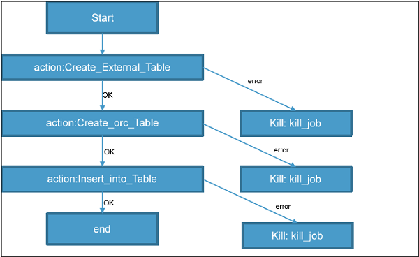
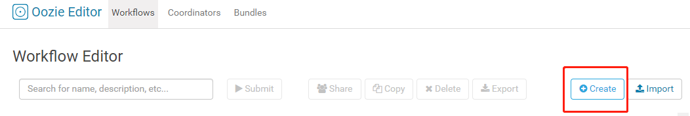
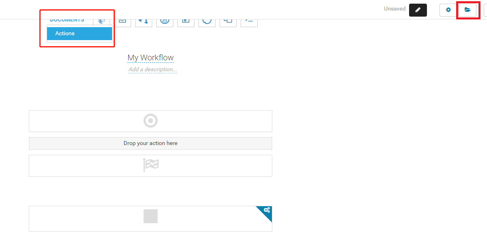

Oozie
Oozie是一个用于在分布式环境中运行和管理Hadoop jobs的调度系统。它可以结合多个复杂的jobs，使其以有序的顺序执行以完成更大的任务。在一个任务序列中，两个或者多个jobs可以被指定为并行执行的。
Oozie与Hadoop栈紧密绑定，支持像Hive、Pig、Sqoop这样的Hadoop jobs，也支持Java和Shell。
Oozie负责触发workflow actions，workflow actions使用Hadoop 执行引擎执行task。因此，Oozie 可以使用Hadoop的机制进行负载均衡、故障转移等。
Oozie通过回调（callback）和轮询（polling）检测任务的完成。Oozie启动task后，它提供一个这个人物的唯一的回调HTTP URL （callback HTTP URL），任务完成后会通知这个URL。如果task未能成功调用回调URL，Oozie可以轮询task的完成。
Oozie的三种jobs类型：
- Workflow Jobs：使用DAG表示的一个要执行的actions的序列
- Coordinator Jobs：它们是由workflow jobs组成的并按时间和数据的可用性而触发
- Bundle：可以被当做是多个coordinator和workflow jobs组成的一个包
一个由Controls（Start、Decision、Fork、Join和End）和Actions（Hive、Shell、Pig）构成的示例Workflow的流程图：

Workflow总是由Start标签开始，并以End标签结束。
Oozie Jobs通常是作为coordinators或bundles进行调度的。
1、Workflow
Oozie中的workflow是一个actions的序列。这些actions处于受控制的依赖关系中，下一个action只能根据当前action的输出运行。后续actions依赖于它之前的action。Workflow action可以是hive action、Pig action、Java action 、Shell action等。可以通过决策树来决定怎样以及在什么条件下job会运行。
Fork（分叉）用于并行运行多个jobs。Oozie workflows可以被参数化（像${nameNode}这样的变量可以在workflow定义中传递）。这些参数来自一个被称为属性文件（property file）的配置文件。
例子
从Hive外部表加载数据到ORC Hive表
Step 1、Hive外部表DDL
Create external table external_table(
name string,
age int,
address string,
zip int
)
row format delimited
fields terminated by ','
stored as textfile
location '/test/abc';
Step 2、Hive ORC 表DDL
Create Table orc_table(
name string, -- Concate value of first name and last name with space as seperator
yearofbirth int,
age int, -- Current year minus year of birth
address string,
zip int
)
STORED AS ORC;
Step 3、从外部表往orc表插入数据的Hive脚本
use ${database_name}; -- input from Oozie
insert into table orc_table
select
concat(first_name,' ',last_name) as name,
yearofbirth,
year(from_unixtime) --yearofbirth as age,
address,
zip
from external_table;
Step 4、创建一个执行上述步骤的workflow
<!-- This is a comment -->
<workflow-app xmlns = "uri:oozie:workflow:0.4" name = "simple-Workflow">
<start to = "Create_External_Table" />
<!—Step 1 -->
<action name = "Create_External_Table">
<hive xmlns = "uri:oozie:hive-action:0.4">
<job-tracker>xyz.com:8088</job-tracker>
<name-node>hdfs://rootname</name-node>
<script>hdfs_path_of_script/external.hive</script>
</hive>
<ok to = "Create_orc_Table" />
<error to = "kill_job" />
</action>
<!—Step 2 -->
<action name = "Create_orc_Table">
<hive xmlns = "uri:oozie:hive-action:0.4">
<job-tracker>xyz.com:8088</job-tracker>
<name-node>hdfs://rootname</name-node>
<script>hdfs_path_of_script/orc.hive</script>
</hive>
<ok to = "Insert_into_Table" />
<error to = "kill_job" />
</action>
<!—Step 3 -->
<action name = "Insert_into_Table">
<hive xmlns = "uri:oozie:hive-action:0.4">
<job-tracker>xyz.com:8088</job-tracker>
<name-node>hdfs://rootname</name-node>
<script>hdfs_path_of_script/Copydata.hive</script>
<param>database_name</param>
</hive>
<ok to = "end" />
<error to = "kill_job" />
</action>
<kill name = "kill_job">
<message>Job failed</message>
</kill>
<end name = "end" />
</workflow-app>
其中Action 节点定义了该节点运行的 job 的类型。action 节点中的Hive 节点定义了action是Hive类型的。每种类型的action都有对应的标签。在这个job钟，还定义了job tracker、name node、使用的脚本以及参数条目。Script标签定义了运行对应action的脚本。Param标签定义了要传递到脚本中的值。
这个workflow会被转化为如下的DAG：

1.1、运行Workflow
运行workflow之前，workflow和hive脚本应该被放置到HDFS路径中。
oozie job --oozie http://host_name:8080/oozie -D oozie.wf.application.path=hdfs://namenodepath/pathof_workflow_xml/workflow.xml -run
通过这个命令可以运行一次workflow。通过Oozie Web UI（http://hostname:8080）可以查看job的状态，Workflow的可能状态有：PREP、RUNNING、SUSPENDED、SUCCESSED、KILLED、FAILED。
1.2、Workflow中的Fork和Join控制节点
使用Fork可以并行运行多个jobs。使用Fork时，必须使用Join作为分叉的结束节点。
上面例子中，可以同时创建两个表：
<workflow-app xmlns = "uri:oozie:workflow:0.4" name = "simple-Workflow">
<start to = "fork_node" />
<fork name = "fork_node">
<path start = "Create_External_Table"/>
<path start = "Create_orc_Table"/>
</fork>
<action name = "Create_External_Table">
<hive xmlns = "uri:oozie:hive-action:0.4">
<job-tracker>xyz.com:8088</job-tracker>
<name-node>hdfs://rootname</name-node>
<script>hdfs_path_of_script/external.hive</script>
</hive>
<ok to = "join_node" />
<error to = "kill_job" />
</action>
<action name = "Create_orc_Table">
<hive xmlns = "uri:oozie:hive-action:0.4">
<job-tracker>xyz.com:8088</job-tracker>
<name-node>hdfs://rootname</name-node>
<script>hdfs_path_of_script/orc.hive</script>
</hive>
<ok to = "join_node" />
<error to = "kill_job" />
</action>
<join name = "join_node" to = "Insert_into_Table"/>
<action name = "Insert_into_Table">
<hive xmlns = "uri:oozie:hive-action:0.4">
<job-tracker>xyz.com:8088</job-tracker>
<name-node>hdfs://rootname</name-node>
<script>hdfs_path_of_script/Copydata.hive</script>
<param>database_name</param>
</hive>
<ok to = "end" />
<error to = "kill_job" />
</action>
<kill name = "kill_job">
<message>Job failed</message>
</kill>
<end name = "end" />
</workflow-app>
其中fork标签指定了并行运行的actions，join标签标记了fork的结束和下一步的action。
1.3、Workflow中的Decision节点
Decision标签检验是否基于decision的输出来运行action。在上面的例子中，如果hive表已经存在则不需要再创建了。此处要用到HDFS EL函数fs:exists——boolean fs:exists(String path)，路径存在时返回true。
<workflow-app xmlns = "uri:oozie:workflow:0.4" name = "simple-Workflow">
<start to = "external_table_exists" />
<decision name = "external_table_exists">
<switch>
<case to = "Create_External_Table">${fs:exists('/test/abc') eq 'false'}
</case>
<default to = "orc_table_exists" />
</switch>
</decision>
<action name = "Create_External_Table">
<hive xmlns = "uri:oozie:hive-action:0.4">
<job-tracker>xyz.com:8088</job-tracker>
<name-node>hdfs://rootname</name-node>
<script>hdfs_path_of_script/external.hive</script>
</hive>
<ok to = "orc_table_exists" />
<error to = "kill_job" />
</action>
<decision name = "orc_table_exists">
<switch>
<case to = "Create_orc_Table">
${fs:exists('/apps/hive/warehouse/orc_table') eq 'false'}</case>
<default to = "Insert_into_Table" />
</switch>
</decision>
<action name = "Create_orc_Table">
<hive xmlns = "uri:oozie:hive-action:0.4">
<job-tracker>xyz.com:8088</job-tracker>
<name-node>hdfs://rootname</name-node>
<script>hdfs_path_of_script/orc.hive</script>
</hive>
<ok to = "Insert_into_Table" />
<error to = "kill_job" />
</action>
<action name = "Insert_into_Table">
<hive xmlns = "uri:oozie:hive-action:0.4">
<job-tracker>xyz.com:8088</job-tracker>
<name-node>hdfs://rootname</name-node>
<script>hdfs_path_of_script/Copydata.hive</script>
<param>database_name</param>
</hive>
<ok to = "end" />
<error to = "kill_job" />
</action>
<kill name = "kill_job">
<message>Job failed</message>
</kill>
<end name = "end" />
</workflow-app>
其中如果 EL 函数结果为true则执行对应的Case标签指向的action。Switch标签也有一个Default标签，在没有Case标签内容为true的时候执行。
2、Property文件
通过配置文件可以将Oozie workflow参数化。使用多个property文件可以使用相同的workflow执行多个jobs（每个job一个propery文件）。
workflow定义中可以传递像${nameNode}这样的变量。这种变量的值会在运行时被定义在‘.properties’文件中的值替换。
比如，job1.properties
# proprties
nameNode = hdfs://rootname
jobTracker = xyz.com:8088
script_name_external = hdfs_path_of_script/external.hive
script_name_orc=hdfs_path_of_script/orc.hive
script_name_copy=hdfs_path_of_script/Copydata.hive
database = database_name
修改workflow定义：
<!-- This is a comment -->
<workflow-app xmlns = "uri:oozie:workflow:0.4" name = "simple-Workflow">
<start to = "Create_External_Table" />
<action name = "Create_External_Table">
<hive xmlns = "uri:oozie:hive-action:0.4">
<job-tracker>${jobTracker}</job-tracker>
<name-node>${nameNode}</name-node>
<script>${script_name_external}</script>
</hive>
<ok to = "Create_orc_Table" />
<error to = "kill_job" />
</action>
<action name = "Create_orc_Table">
<hive xmlns = "uri:oozie:hive-action:0.4">
<job-tracker>${jobTracker}</job-tracker>
<name-node>${nameNode}</name-node>
<script>${script_name_orc}</script>
</hive>
<ok to = "Insert_into_Table" />
<error to = "kill_job" />
</action>
<action name = "Insert_into_Table">
<hive xmlns = "uri:oozie:hive-action:0.4">
<job-tracker>${jobTracker}</job-tracker>
<name-node>${nameNode}</name-node>
<script>${script_name_copy}</script>
<param>${database}</param>
</hive>
<ok to = "end" />
<error to = "kill_job" />
</action>
<kill name = "kill_job">
<message>Job failed</message>
</kill>
<end name = "end" />
</workflow-app>
使用--config选项指定property文件，运行workflow：
oozie job --oozie http://host_name:8080/oozie
--config edgenode_path/job1.properties -D oozie.wf.application.path=hdfs://Namenodepath/pathof_workflow_xml/workflow.xml –run
propery文件应该位于edge node上，workflow和脚本应该在HDFS中。
运行时，所有 ${} 包括的参数都会被 .properites 文件中对应的值替换。
propery文件中可以有多余的参数，所以一个 property 文件也可以用于多个workflow。但是如果propery文件缺少workflow所需的参数，则会发生错误。
3、Coordinator
在之前例子中workflow以Coordinator方式运行时，不用创建表的两个步骤。在现实场景中，外部表会有流动的数据，当数据加载到外部表，数据应该被处理到ORC 表中。
修改后的workflow：
<workflow-app xmlns = "uri:oozie:workflow:0.4" name = "simple-Workflow">
<start to = "Insert_into_Table" />
<action name = "Insert_into_Table">
<hive xmlns = "uri:oozie:hive-action:0.4">
<job-tracker>${jobTracker}</job-tracker>
<name-node>${nameNode}</name-node>
<script>${script_name_copy}</script>
<param>${database}</param>
</hive>
<ok to = "end" />
<error to = "kill_job" />
</action>
<kill name = "kill_job">
<message>Job failed</message>
</kill>
<end name = "end" />
</workflow-app>
使用这个workflow的coordinator：
<coordinator-app xmlns = "uri:oozie:coordinator:0.2" name =
"coord_copydata_from_external_orc" frequency = "5 * * * *" start =
"2016-00-18T01:00Z" end = "2025-12-31T00:00Z"" timezone = "America/Los_Angeles">
<controls>
<timeout>1</timeout>
<concurrency>1</concurrency>
<execution>FIFO</execution>
<throttle>1</throttle>
</controls>
<action>
<workflow>
<app-path>pathof_workflow_xml/workflow.xml</app-path>
</workflow>
</action>
</coordinator-app>
其中：
- strat：job开始的时间
- end：job停止的时间
- timezone：coordinator应用的时区
- frequency：job执行频率
控制信息：
- timeout：超时时间，分钟。action取消之前等待其它条件满足的最大时间。0 表示action执行时其它条件必须满足，否则action会被取消，即action执行时，如果输入事件没有全部满足，action会马上超时。-1表示没有超时时间，action会一直等待条件满足。默认值-1。
- concurrency：同时可以运行这个action的最大个数。默认值1
- execution：多个coordinator job 实例满足了执行条件时的执行顺序。
- FIFO：首先执行老的，默认。
- LIFO：首先执行最新
- LAST_ONLY：取消所有旧的action
运行命令：
oozie job --oozie http://host_name:8080/oozie
--config edgenode_path/job1.properties -D oozie.wf.application.path=hdfs://Namenodepath/pathof_workflow_xml/workflow.xml -d "2 minute" –run
其中-d "2 minute"会确保job提交2分钟后启动coordinator。
这个coordinator每个小时的5th分钟会执行。
Coordinator Job 也可以使用.properties文件执行。
4、Bundle
Oozie Bundle系统可以用于执行一组coordinator应用。coordinator应用直接没有明确的依赖关系。但是用户可以使用coordinator应用的数据依赖来创建一个隐式的数据应用管道。
<bundle-app xmlns = 'uri:oozie:bundle:0.1'
name = 'bundle_copydata_from_external_orc'>
<controls>
<kick-off-time>${kickOffTime}</kick-off-time>
</controls>
<coordinator name = 'coord_copydata_from_external_orc' >
<app-path>pathof_coordinator_xml</app-path>
<configuration>
<property>
<name>startTime1</name>
<value>time to start</value>
</property>
</configuration>
</coordinator>
</bundle-app>
其中Kick-off-time表示bundle启动和提交coordinator应用的时间。
5、Hue 和 Oozie
HUE --> Workflows --> Editors --> Workflows

Create

选择Actions

设置对应的脚本和依赖文件。脚本和依赖文件通过点击右上目录图标，上传到HDFS指定目录。最后保存。